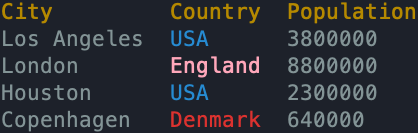

Rad Blocks
Working with JSON APIs is a common scripting task. You might need to query GitHub for repository info, check the status of your cloud services, or pull data from internal APIs. Typically, this involves making HTTP requests, parsing JSON responses, extracting the fields you care about, and formatting everything for display.
Rad makes this entire workflow concise and declarative with rad blocks - a special syntax that lets you query JSON APIs and display results as formatted tables in just a few lines of code. Instead of writing imperative parsing logic, you declare what you want, and Rad handles the rest.
Basic Example¶
This concept will become clearer with an example.
Below is a simple script capable of querying a given GitHub repo (leveraging GitHub's public API) for information about its latest commits.
args:
repo str # The repo to query. Format: user/project
limit int = 20 # The max commits to return.
url = "https://api.github.com/repos/{repo}/commits?per_page={limit}"
Time = json[].commit.author.date
Author = json[].commit.author.name
SHA = json[].sha
rad url:
fields Time, Author, SHA
And running it looks something like this:
rad commits amterp/rad 5
Querying url: https://api.github.com/repos/amterp/rad/commits?per_page=5
Time Author SHA
2025-01-11T04:15:06Z Alexander Terp 306f3a4ddb3b09747d61a5eab264c3d72fbbc36e
2025-01-11T03:07:56Z Alexander Terp 304a914644dfd73a59b85a191481f9c429b4d25e
2025-01-11T01:00:42Z Alexander Terp 7171ec92ae729f9d04e224e16272c9b888dffe41
2025-01-10T12:11:08Z Alexander Terp 4b64f585d08d9a5ee40549b6b9624530ac713eb1
2025-01-09T11:34:51Z Alexander Terp abfcf2d940a18b819f7ae9e9040550a9644e5120
This is a simple example, but it demonstrates the ability to query GitHub's API (which returns JSON), extracting fields we're interested in (commits' time, author, and SHA).
And that's with just a few lines of code! Let's break it down piece by piece.
Arg Block¶
args:
repo str # The repo to query. Format: user/project
limit int = 20 # The max commits to return.
url = "https://api.github.com/repos/{repo}/commits?per_page={limit}"
Here we have an args block where we declare a repo string and a limit int with a default of 20.
After the args block, we create a url string using string interpolation to fill in the repo name, and the limit for how many commits we want GitHub to give us.
Json Paths¶
Time = json[].commit.author.date
Author = json[].commit.author.name
SHA = json[].sha
This is where things get more interesting. The above definitions correspond to expected paths in the JSON response i.e. a series of keys to look up.
In Rad nomenclature, we refer to these as json path definitions.
If you query GitHub's API and take a look at the JSON response, you can see how these paths correspond to the data. Example URL if you want to see for yourself:
https://api.github.com/repos/amterp/rad/commits?per_page=2
Here's a simplified example response with two commits, showing the structure we're interested in:
[
{
"sha": "306f3a4ddb3b09747d61a5eab264c3d72fbbc36e",
"commit": {
"author": {
"name": "Alexander Terp",
"date": "2025-01-11T04:15:06Z"
}
}
},
{
"sha": "2b642c482b32e4d87924839b2f5a9592670dee69",
"commit": {
"author": {
"name": "Alexander Terp",
"date": "2025-01-10T12:21:03Z"
}
}
}
]
You can see how the path for Author = json[].commit.author.name corresponds to a final value of "Alexander Terp".
Json paths leverage a special syntax that Rad offers. They always start with json.
json can be thought of as representing the JSON blob as a whole, or its root, if you want to think of the JSON data as a tree.
The [] after json tells Rad that you expect the json blob to be a list, and to "unwrap" it and dig into individual items in that list for the remainder of the path.
commit then tells it to look up a key of that name (literally commit), and to then look up author next, and then finally name.
Basic Path Syntax Summary¶
The examples above demonstrate the core JSON path patterns you'll use most often:
- Dot notation:
json.fieldorjson.commit.author.namefor nested fields - Array unwrapping:
json[]tells Rad to iterate through a list - Combined:
json[].field.nestedextracts nested data from each array item
Advanced JSON Path Features
The JSON path syntax supports additional powerful features like wildcards (json[].*), indexed access
(json[0], json.items[2]), and multiple levels of array unwrapping (json[].items[][].related[]).
We'll cover these in a later section: JSON Paths (Advanced).
When a json path declaration is executed, its variable (Author for example) is initialized as an empty list.
It's a "special" list though, as it has a json field definition tied to it, which can be used in a rad block, let's look at that one next.
Rad Block¶
rad url:
fields Time, Author, SHA
Why 'rad'?
The project name Rad comes from its original core use case: Request And Display.
This workflow - querying data from APIs and displaying it in readable tables - is exactly
what rad blocks are designed for. It's not just the project name, it's what the keyword does!
rad is a keyword that executes a "Request And Display" workflow.
Following the rad keyword, we provide the url variable which will get used to execute an HTTP GET request.
Then, inside the rad block itself, using the keyword fields, we specify the earlier json fields that we defined.
Listing them here will tell the rad block to extract data from the resulting JSON blob according to the json field
paths that you defined.
The ordering in which the fields are listed also controls the ordering of columns in the ensuing table that gets printed.
When run, this will print the table we saw earlier; here it is again for reference (with a limit of 3).
Time Author SHA
2025-01-11T04:15:06Z Alexander Terp 306f3a4ddb3b09747d61a5eab264c3d72fbbc36e
2025-01-11T03:07:56Z Alexander Terp 304a914644dfd73a59b85a191481f9c429b4d25e
2025-01-11T01:00:42Z Alexander Terp 7171ec92ae729f9d04e224e16272c9b888dffe41
Note that the variable names we choose for the json field definitions become the header names in the table.
Additional Rad Block Options¶
Rad blocks include options to control the resulting table.
Sorting¶
By default, the rows in your table are sorted by their original order in the JSON blob. However, you can control this.
Let's say we have the following table by default:
City Country Population
Los Angeles USA 3800000
London England 8800000
Houston USA 2300000
Copenhagen Denmark 640000
The simplest sorting option is alphabetically, across the whole row.
rad url:
fields City, Country, Population
sort
City Country Population
Copenhagen Denmark 640000
Houston USA 2300000
London England 8800000
Los Angeles USA 3800000
What if we wanted to sort by Country, though? And then break ties with City? We can do that:
rad url:
fields City, Country, Population
sort Country, City
City Country Population
Copenhagen Denmark 640000
London England 8800000
Houston USA 2300000
Los Angeles USA 3800000
If we wanted to sort by descending population, you can add desc after the name of the column:
rad url:
fields City, Country, Population
sort Population desc
City Country Population
London England 8800000
Los Angeles USA 3800000
Houston USA 2300000
Copenhagen Denmark 640000
'asc' is the default
sort City and sort City asc are both valid and identical in functionality - you can include it if you want to be explicit.
Mapping¶
You can also transform a column's values before it gets printed.
For example, let's say you wanted the 'Population' column in the above example to be in millions, and to display one decimal place, you can do that with a map column modifier:
rad url:
fields City, Country, Population
Population:
map fn(p) "{p/1e6:.1}"
The syntax here is map <lambda>. In this example, the lambda is fn(p) "{p/1e6:.1}".
You can read about lambdas in an earlier section here: Functions: Lambdas.
If we run this, you'll see the change:
City Country Population
Los Angeles USA 3.8
London England 8.8
Houston USA 2.3
Copenhagen Denmark 0.6
Let's break down this syntax more. After declaring the fields:
Population:
map fn(p) "{p/1e6:.1}"
Population: begins a column modifier block. The identifier prior to the colon is expected to be one of the fields. Inside one of these blocks, you can apply modifiers on that column, such as map or color.
map is considered a keyword in the context of rad blocks. After map, a lambda expression is expected, which you can think of as a mini-function.
In this case, we've written fn(p) "{p/1e6:.1}". The lambda takes a variable p (name could be any valid identifier). This will represent an individual value in the Population list.
The expression that follows is what will get evaluated and decide the final value in each cell.
It is the output of your lambda mini-function. In this example, we turn it into a string, created using string interpolation.
Inside the string interpolation expression, we first divide it by one million (p/1e6, using scientific notation), and then
use formatting syntax (right of the colon) to specify that we want the resulting float to be stringified with one decimal place (.1).
Modifier Execution Order
Field modifiers execute in a specific order: filter → sort → map
- Filter first: Removes unwanted rows before sorting
- Sort middle: Sorts the filtered data in its original form
- Map last: Transforms values for display only
This means sorting and filtering see the original extracted values, not the transformed display values from map.
Lambda Context Parameter¶
When transforming columns with map, your lambda can optionally accept a second parameter to access context information about the transformation:
rad url:
fields City, Country, Population
Population:
map fn(p, ctx) "{p / sum(ctx.src) * 100:.1}%"
This shows each city's population as a percentage of the total.
The context object provides three fields:
ctx.idx- The current row index (0-based)ctx.src- An immutable snapshot of the full column data (as a list)ctx.field- The name of the field being transformed (e.g., "Population")
This is useful for operations that need to know about the overall dataset:
// Highlight the largest city
City:
map fn(city, ctx) ctx.idx == 0 ? "{city} ★" : city
The field property is especially helpful when applying the same transformation to multiple columns:
// Apply to multiple columns, with field-specific logic
timestamp, strategy, fund:
map fn(x, ctx):
if ctx.field == "timestamp":
return format_time(x)
return str(x)
Context is Optional
Single-parameter lambdas continue to work exactly as before. The context parameter is completely optional:
Population:
map fn(p) p / 1e6 // No context needed
Filtering¶
You can also filter rows based on conditions. This is useful when you only want to display data that matches certain criteria.
For example, let's say you're querying an API that returns users, but you only want to see active users over 18 years old:
rad url:
fields Name, Age, Status
Age:
filter fn(age) age >= 18
Status:
filter fn(s) s == "active"
The syntax is filter <function>. The function receives each value from that column and returns a boolean (or truthy value). If it returns true, that row is kept. If false, the entire row is discarded.
In this example, we're applying two filters:
Age: Keep only rows where age is 18 or greaterStatus: Keep only rows where status equals "active"
When multiple fields have filters, a row must pass all filters to be displayed (AND logic). In our example, both the age and status filters must pass.
Let's see this in action with some mock data:
Ages = [25, 15, 30, 20, 12]
Names = ["Alice", "Bob", "Charlie", "Diana", "Eve"]
Status = ["active", "active", "inactive", "active", "active"]
display:
fields Names, Ages, Status
Ages:
filter fn(a) a >= 18
Status:
filter fn(s) s == "active"
Names Ages Status
Alice 25 active
Diana 20 active
Notice that Charlie doesn't appear (age >= 18 but status is inactive), Bob doesn't appear (active but age < 18), and Eve doesn't appear (active but age < 18).
Like with sorting and mapping, the filter predicate can be a lambda expression or a function reference:
display:
fields Name, Age
Age:
filter is_adult
fn is_adult(age):
return age >= 18
Just like map, filter lambdas can accept an optional context parameter with idx, src, and field:
// Keep only even-indexed rows
Names:
filter fn(n, ctx) ctx.idx % 2 == 0
// Keep values below the column average
Age:
filter fn(age, ctx) age < sum(ctx.src) / ctx.src.len()
Execution Order: filter → sort → map
Filtering happens before sorting and mapping. This means:
- Filters see the original extracted values (not transformed by map)
- Sorting operates on already-filtered data
- Mapping transforms the final filtered+sorted values for display
This order ensures your filters work on raw data and your sorts only process rows that will actually be displayed.
Color¶
Another column modifier uses the keyword color. You can tell Rad to color a cell's value depending on its contents by using a regex.
For example:
rad url:
fields City, Country, Population
Country:
color "pink" ".*"
color "red" "Denmark"
color "blue" "USA"
The syntax is color <color> <regex>. You can apply multiple rules, and later rules override earlier ones.
For example, here we start off by coloring everything pink.
Then, we add three more rules: any sequence "Denmark" should be colored red, and "USA" should be colored blue.

This screenshot from a terminal demonstrates the colors. England is colored pink because the initial .* rule is the only regex that matched it.
Note that the specific colors that appear varies between terminals and user settings.
Valid colors: plain, black, red, green, yellow, blue, magenta, cyan, white, orange, pink.
Multi-Column Modifiers¶
You can apply the same modifiers to multiple columns at once by listing them together:
rad url:
fields Status, Priority, Assignee, DueDate
Status, Priority:
color "green" "complete|high"
color "red" "blocked|low"
Status, Priority, Assignee:
map fn(s) upper(s)
This example applies color rules to both Status and Priority, then transforms three columns to uppercase with a single map block. This is much more concise than writing separate modifier blocks for each column.
Any column modifier (filter, map, color) can be applied to multiple columns this way.
If Statements¶
Rad blocks can contain if statements, so if you want slightly different behavior for your rad block based on some condition, you don't need to copy and paste the whole block into two separate if blocks.
Let's say your script had a flag for sorting by population or not. Here's an example of how that could look:
args:
sort_by_population p bool # Enable to sort by population.
// ... some script stuff here
rad url:
fields City, Country, Population
if sort_by_population:
sort Population desc
else:
sort
If the flag is enabled, we sort by descending population, otherwise we sort rows alphabetically.
You can put any rad block statements into these if blocks, including fields, column modifiers, etc.
Other Block Types¶
So far we've seen the rad block, which performs an HTTP request, extracts data, and displays it as a table.
Rad also offers two variants that give you more control over this workflow: request blocks and display blocks.
request: No Display¶
A request block is like a rad block, but it doesn't print a table. It performs the HTTP request and extracts fields
into lists, then stops. This is useful when you want to process the data further before displaying it, or use it for something other than display.
request url:
fields City, Country, Population
sort Population desc
// From here, the field lists are populated and sorted
// City[0] is now the city with the largest population
largest_city = City[0]
print("The largest city is {largest_city}")
Note that filter, sort, and map all work in request blocks since they modify the underlying data. However, color is display-only and has no effect since nothing gets displayed.
display: No Request¶
A display block takes already-populated data and formats it as a table. It's the opposite of request blocks - no HTTP request is made, just formatting and display.
Display with manual data:
Nums = [1, 2]
Words = ["hi", "hello"]
display:
fields Nums, Words
Nums Words
1 hi
2 hello
Display with a data source:
Display blocks can also take a variable containing JSON data (like the response from http_get). This is particularly
useful when you need custom headers or authentication:
// Fetch data with custom headers
resp = http_get(url, headers=my_headers)
// Define JSON paths
Name = json[].name
Age = json[].age
// Display the data
display resp.body:
fields Name, Age
sort Age desc
When to Use Each¶
rad: When you want to query and display in one step (most common case)request: When you need to process data before displaying or use it for non-display purposesdisplay: When you have data from manual sources,http_get()with custom headers, or derived fromrequestblocks
Modifier Mutation Across Block Types
Field modifiers like (filter, sort, map) may or may not mutate underlying data depending on the block type:
- In
radandrequestblocks: Permanently modify the field arrays - In
displayblocks: Applied for rendering, but does not change underlying data.
This means you can use request blocks to filter, sort, or transform data for further processing,
while display blocks let you format data for viewing without altering the original values.
Understanding HTTP Requests¶
When you write rad or request blocks, Rad automatically performs an HTTP GET request to the URL and expects a JSON response.
This happens behind the scenes - you don't need to explicitly call any HTTP functions.
Headers and Authentication¶
Currently, rad and request blocks don't support custom headers or authentication directly. If you need to add headers (for example, to authenticate with an API), use the http_get or http_post functions first, then pass the result to a display block:
args:
token str # API authentication token
headers = {
"Authorization": "Bearer {token}",
"Accept": "application/json"
}
url = "https://api.github.com/user/repos"
resp = http_get(url, headers=headers)
// Define JSON paths for the response
Name = json[].name
Stars = json[].stargazers_count
// Display the data we fetched
display resp.body:
fields Name, Stars
sort Stars desc
This pattern gives you full control over the HTTP request while still leveraging rad blocks for data extraction and display.
Summary¶
- Rad blocks make working with JSON APIs concise and declarative - request, extract, and display data in just a few lines
- Three block types serve different needs:
rad url:- Request and display in one steprequest url:- Request and extract data without displayingdisplay:- Display already-populated data as a table
- JSON field definitions use special path syntax to extract data from JSON responses
- Basic patterns:
json.field,json[],json[].nested.path - Advanced features exist (wildcards, indexing) for complex extraction needs
- Basic patterns:
- Table customization options:
- Filtering: Remove rows based on conditions
- Sorting:
sort,sort Field,sort Field desc - Transforming: Map functions to modify column values
- Styling: Color cells based on regex patterns
- Multi-column: Apply same modifiers to multiple columns at once
- Conditional: Use
ifstatements for dynamic behavior - Execution order: filter → sort → map
- HTTP control: rad blocks perform GET automatically; use
http_get()/http_post()withdisplayfor more advanced queries (e.g. requiring headers/auth)
Next¶
Next, we'll cover an important concept for keeping your scripts maintainable: Type Annotations.